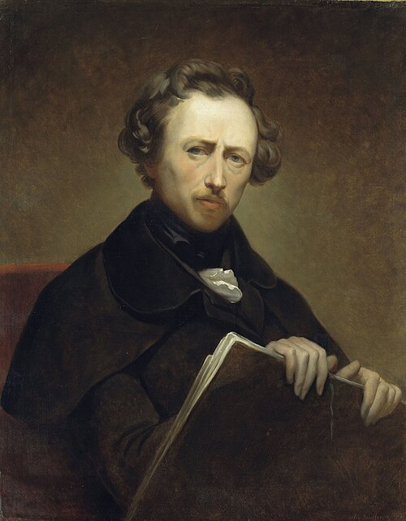
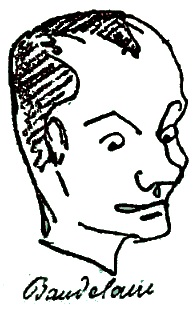
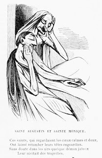
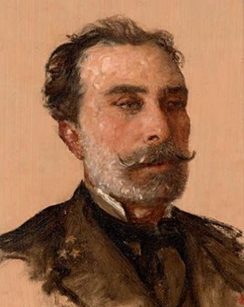

Salon of 1846
M. Ary Scheffer and the Apes of Sentiment
De M. Ary Scheffer et des singes du sentiment

Un exemple désastreux de cette méthode, si l’on peut appeler ainsi l’absence de méthode, est M. Ary Scheffer .
A disastrous example of this method—if absence of method can be called a method—is M. Ary Scheffer.
Après avoir imité Delacroix, après avoir singé les coloristes, les dessinateurs français et l’école néo-chrétienne d’Owerbeck, M. Ary Scheffer s’est aperçu, — un peu tard sans doute, — qu’il n’était pas né peintre. Dès lors il fallut recourir à d’autres moyens ; et il demanda aide et protection à la poésie.
After imitating Delacroix, after aping the colorists, the French draughtsmen, and Overbeck's neo-Christian school, M. Ary Scheffer realized—rather late, no doubt—that he had not been born a painter. Other means therefore had to be found, and he asked poetry for help and protection.
Faute ridicule pour deux raisons : d’abord la poésie n’est pas le but immédiat du peintre ; quand elle se trouve mêlée à la peinture, l’œuvre n’en vaut que mieux, mais elle ne peut pas en déguiser les faiblesses. Chercher la poésie de parti pris dans la conception d’un tableau est le plus sûr moyen de ne pas la trouver. Elle doit venir à l’insu de l’artiste. Elle est le résultat de la peinture elle-même ; car elle gît dans l’âme du spectateur, et le génie consiste à l’y réveiller. La peinture n’est intéressante que par la couleur et par la forme ; elle ne ressemble à la poésie qu’autant que celle-ci éveille dans le lecteur des idées de peinture.
A ridiculous mistake for two reasons. First, poetry is not the painter's immediate aim; when it happens to mingle with painting the work is all the better for it, but poetry cannot disguise weaknesses. Deliberately searching for poetry in the conception of a picture is the surest way not to find it. It must come without the artist knowing it. It is the result of the painting itself, for it lies in the spectator's soul and genius consists in awakening it there. Painting is interesting only through color and form; it resembles poetry only insofar as poetry awakens pictorial ideas in the reader.
En second lieu, et ceci est une conséquence de ces dernières lignes, il est à remarquer que les grands artistes, que leur instinct conduit toujours bien, n’ont pris dans les poëtes que des sujets très-colorés et très-visibles. Ainsi ils préfèrent Shakspeare à Arioste.
Second—and this follows from the preceding lines—it is worth observing that great artists, whose instinct always guides them well, have taken from poets only subjects that are highly colored and highly visible. Thus they prefer Shakespeare to Ariosto.
Or, pour choisir un exemple éclatant de la sottise de M. Ary Scheffer, examinons le sujet du tableau intitulé Saint Augustin et sainte Monique . Un brave peintre espagnol eût naïvement, avec la double piété de l’art de la religion, peint de son mieux l’idée générale qu’il se faisait de saint Augustin et de sainte Monique. Mais il ne s’agit pas de cela ; il faut surtout exprimer le passage suivant, — avec des pinceaux et de la couleur : — « Nous cherchions entre nous quelle sera cette vie éternelle que l’œil n’a pas vue, que l’oreille n’a pas entendue, et où n’atteint pas le cœur de l’homme ! » C’est le comble de l’absurdité. Il me semble voir un danseur exécutant un pas de mathématiques !
Now, to choose a brilliant example of M. Ary Scheffer's folly, let us examine the subject of the painting entitled Saint Augustine and Saint Monica. A good Spanish painter would naïvely, with the double piety of art and religion, have painted as well as he could the general idea he formed of Saint Augustine and Saint Monica. But that is not the issue. Above all one must express, with brushes and color, the following passage: ‘We sought together what that eternal life would be which the eye has not seen, the ear has not heard, and which the heart of man has not reached!’ This is the height of absurdity. I seem to see a dancer executing a mathematical step!


Contemporary spoof of Ary Scheffer’s Saint Augustine and Saint Monica, reproduced in Vetustideces, “CaricaturArte 7: el Salón de 1846 (2ª parte).”
Autrefois le public était bienveillant pour M. Ary Scheffer ; il retrouvait devant ces tableaux poétiques les plus chers souvenirs des grands poëtes, et cela lui suffisait. La vogue passagère de M. Ary Scheffer fut un hommage à la mémoire de Gœthe. Mais les artistes, même ceux qui n’ont qu’une originalité médiocre, ont montré depuis longtemps au public de la vraie peinture, exécutée avec une main sûre et d’après les règles les plus simples de l’art : aussi s’est-il dégoûté peu à peu de la peinture invisible, et il est aujourd’hui, à l’endroit de M. Ary Scheffer, cruel et ingrat, comme tous les publics. Ma foi ! il fait bien.
Formerly the public was kindly disposed toward M. Ary Scheffer; before his poetic paintings it rediscovered its dearest memories of the great poets, and that was enough. M. Ary Scheffer's passing vogue was a tribute to Goethe's memory. But artists, even those of only modest originality, have long since shown the public real painting, executed with a sure hand and according to the simplest rules of art; and so it has gradually grown disgusted with invisible painting, and today, toward M. Ary Scheffer, is cruel and ungrateful like every public. Faith! it is right.
Du reste, cette peinture est si malheureuse, si triste, si indécise et si sale, que beaucoup de gens ont pris les tableaux de M. Ary Scheffer pour ceux de M. Henry Scheffer , un autre Girondin de l’art. Pour moi, ils me font l’effet. de tableaux de M. Delaroche, lavés par les grandes pluies.
Besides, this painting is so unhappy, sad, indecisive, and dirty that many people have mistaken M. Ary Scheffer's paintings for those of M. Henry Scheffer, another Girondin of art. To me they look like M. Delaroche's paintings washed by heavy rains.
Une méthode simple pour connaître la portée d’un artiste est d’examiner son public. E. Delacroix a pour lui les peintres et les poëtes ; M. Decamps, les peintres ; M. Horace Vernet, les garnisons, et M. Ary Scheffer, les femmes esthétiques qui se vengent de leurs fleurs blanches en faisant de la musique religieuse .
A simple method for discovering an artist's range is to examine his public. E. Delacroix has painters and poets on his side; M. Decamps, painters; M. Horace Vernet, garrisons; and M. Ary Scheffer, aesthetic women who avenge themselves for their white flowers by making religious music.
Les singes du sentiment sont, en général, de mauvais artistes. S’il en était autrement, ils feraient autre chose que du sentiment.
The apes of sentiment are, in general, bad artists. If it were otherwise, they would do something besides sentiment.
Les plus forts d’entre eux sont ceux qui ne comprennent que le joli.
The strongest among them are those who understand only the pretty.
Comme le sentiment est une chose infiniment variable et multiple, comme la mode, il y a des singes de sentiment de différents ordres.
Since sentiment is infinitely variable and multiple, like fashion, there are apes of sentiment of different orders.
Le singe du sentiment compte surtout sur le livret. Il est à remarquer que le titre du tableau n’en dit jamais le sujet, surtout chez ceux qui, par un agréable mélange d’horreurs, mêlent le sentiment à l’esprit. On pourra ainsi, en élargissant la méthode, arriver au rébus sentimental.
The ape of sentiment relies above all on the catalogue. It is worth noting that the title of the painting never tells you its subject, especially among those who, through a pleasant mixture of horrors, mix sentiment with wit. By extending the method one could arrive at the sentimental rebus.

Par exemple, vous trouvez dans le livret : Pauvre fileuse ! Eh bien, il se peut que le tableau représente un ver à soie femelle ou une chenille écrasée par un enfant. Cet âge est sans pitié.
For example, you find in the catalogue: Poor Spinner! Well, the painting may represent a female silkworm or a caterpillar crushed by a child. That age is pitiless.

Aujourd’hui et Demain. — Qu’est-ce que cela ? Peut-être le drapeau blanc et le drapeau tricolore ; peut-être aussi un député triomphant, et le même dégommé. Non, — c’est une jeune vierge promue à la dignité de lorette, jouant avec les bijoux et les roses, et maintenant, flétrie et creusée, subissant sur la paille les conséquences de sa légèreté.
Today and Tomorrow.—What is it? Perhaps the white flag and the tricolor; perhaps a triumphant deputy and the same man dismissed. No—it is a young virgin promoted to the dignity of lorette, playing with jewels and roses, and now, faded and hollowed out, suffering on straw the consequences of her frivolity.

L’Indiscret. — Cherchez, je vous prie. — Cela représente un monsieur surprenant un album libertin dans les mains de deux jeunes filles rougissantes.
The Indiscreet.—Guess, please. It represents a gentleman surprising a libertine album in the hands of two blushing young girls.
Celui-ci rentre dans la classe des tableaux de sentiment Louis XV , qui se sont, je crois, glissés au Salon à la suite de la Permission de dix heures. C’est, comme on le voit, un tout autre ordre de sentiments : ceux-ci sont moins mystiques.
This belongs to the class of Louis XV sentimental pictures which, I think, slipped into the Salon in the wake of Ten O'Clock Leave. It is, as you see, an entirely different order of feelings: these are less mystical.
En général, les tableaux de sentiment sont tirés des dernières poésies d’un bas-bleu quelconque, genre mélancolique et voilé ; ou bien ils sont une traduction picturale des criailleries du pauvre contre le riche, genre protestant ; ou bien empruntés à la sagesse des nations, genre spirituel ; quelquefois aux œuvres de M. Bouilly ou de Bernardin de Saint-Pierre, genre moraliste.
In general, sentimental pictures are drawn from the latest poems of some bluestocking, melancholy and veiled genre; or they are a pictorial translation of the poor man's cries against the rich, Protestant genre; or borrowed from the wisdom of nations, witty genre; sometimes from the works of M. Bouilly or Bernardin de Saint-Pierre, moralist genre.
Voici encore quelques exemples de tableaux de sentiment : l’Amour à la campagne, bonheur, calme, repos, et l’Amour à la ville, cris, désordre, chaises et livres renversés : c’est une métaphysique à la portée des simples.
Here are still more examples of sentimental pictures: Love in the Country—happiness, calm, repose—and Love in the City—cries, disorder, overturned chairs and books. It is metaphysics within reach of simple minds.

La Vie d’une jeune fille en quatre compartiments. — Avis à celles qui ont du penchant à la maternité !
The Life of a Young Girl in Four Compartments.—A warning to those inclined toward maternity!
L’Aumône d’une vierge folle. — Elle donne un sou gagné à la sueur de son front à l’éternel Savoyard qui monte la garde à la porte de Félix. Au dedans, les riches du jour se gorgent de friandises. Celui-là nous vient évidemment de la littérature Marion Delorme, qui consiste à prêcher les vertus des assassins et des filles publiques.
The Alms of a Foolish Virgin.—She gives a penny earned by the sweat of her brow to the eternal Savoyard standing guard at Félix's door. Inside, the rich of the day gorge themselves on delicacies. This obviously comes to us from the Marion Delorme literature, which consists in preaching the virtues of murderers and prostitutes.
Que les Français ont d’esprit et qu’ils se donnent de mal pour se tromper ! Livres, tableaux, romances, rien n’est inutile, aucun moyen n’est négligé par ce peuple charmant, quand il s’agit pour lui de se monter un coup.
How witty the French are, and how much trouble they take to deceive themselves! Books, paintings, romances—nothing is useless, no means is neglected by this charming people when it is a matter of playing a trick on itself.